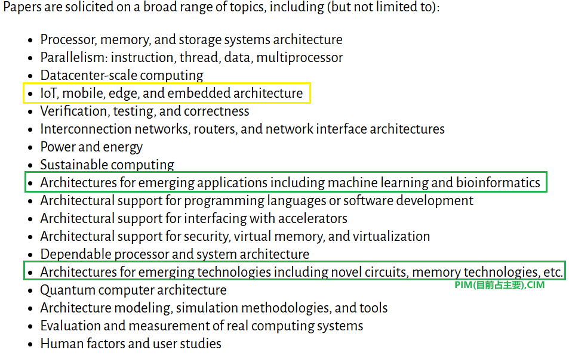
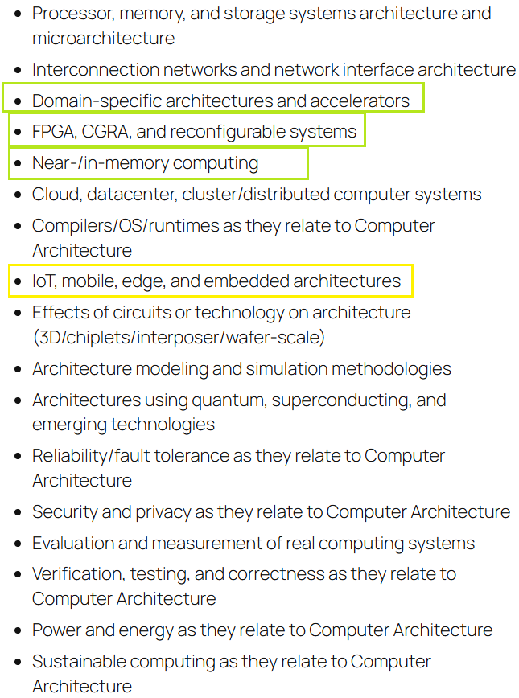
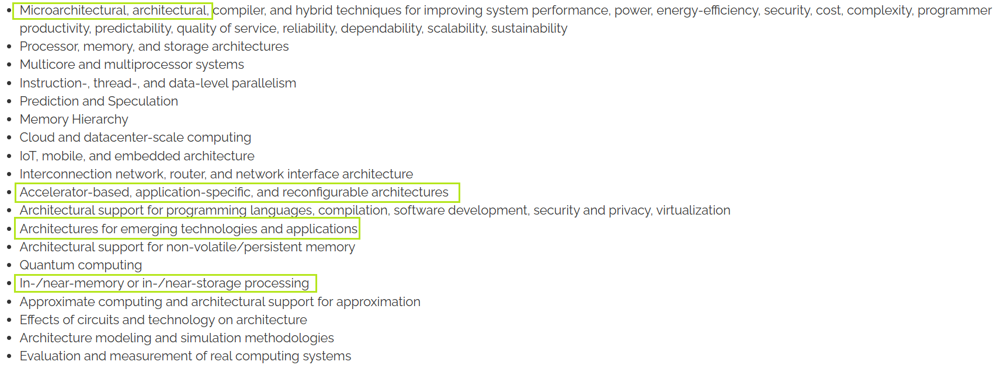

体系结构顶会介绍
清华汪玉和上交戴国浩组在维持的加速器汇总网站： Accelerator Project
四大体系结构会议
ISCA (International Symposium on Computer Architecture) ISCA
MICRO (International Symposium on Microarchitecture) MICRO
ASPLOS (Architectural Support for Programming Languages and Operating Systems) ASPLOS
HPCA (International Symposium on High-Performance Computer Architecture)
- DDL:
4月份 MICRO，ASPLOS(Spring)
7月份 HPCA
8月份 ASPLOS(Summer)
11月份 ISCA,ASPLOS - 投稿要求:
- 论文长度：12页正文（一般为intro+backg.3页，方法6页，evulation3页） + 参考文献 * 其中相对来说ISCA内容最多（大多数文章使用小一号的9pt字体，结果图也密度更高），难度也最高
- 双盲评审，审稿人>5（Rebuttle 负担比较大）
- ASPLOS主要为ACM，HPCA主要为IEEE，另外两个ACM/IEEE轮换
- 接受数量 isca 220~, ASPLOS 100(V1,V2,V3), HPCA 110~, MCIRO 110~
Rebuttle: 出分后有3-4/7-14天时间回复审稿人疑问，MICRO与ASPLOS可以根据疑问或意见提交修订版
Evulation的对比对象
*Accelator一般与同类型的比（评估方式最好对齐），也可以与GPU/CPU比。
Session的选择
体系结构会议中，与我们最相关的session一般是ML Accelerator与Application Accelerator/Domain-Specific Architectures，如果是CIM或PIM等特殊架构会有专门的session，如果是纯粹的微架构优化也会有专门的session。
ISCA的相对应session如下图所示：

HPCA:

MICRO:

量化/稀疏/其他常规方法加速器
量化稀疏或其他加速的方法可能很简单就说清楚了，但要是说明为什么有用，怎么有用，证明有用会麻烦很多。
考虑细节，大量篇幅解释，超多结果证明。
常见的几种量化/稀疏相关工作：
- 非常规的量化/稀疏计算方式
- 例如串行bit级稀疏等新颖方法，但通常需要解决复杂的控制逻辑和实现代价。
- 极致的微架构/系统级/指令调度优化
- 通过极致的硬件微架构、系统层面或指令调度优化实现高效加速（Solid，至少看起来）。
- 全新应用方向
- 另辟蹊径，跳出现有accelerator赛道，针对全新应用场景提出创新性加速方案。
Artifact Evaluation (AE)
什么是 Artifact Evaluation？
Artifact Evaluation 是近年来在计算机体系结构会议中越来越重要的环节，旨在评估论文中描述的系统、工具或数据的可重现性。
AE 流程
1. 准备阶段
- 时间: 论文提交后1-2周内
- 任务: 准备可重现的代码、数据和文档
- 要求:
- 提供完整的源代码
- 包含详细的安装和使用说明
- 提供测试数据和预期结果
- 确保在标准环境中可运行
2. 评审阶段
- 时间: 通常2-4周
- 评审内容:
- 功能正确性：代码是否按论文描述工作
- 可重现性：其他研究者能否重现结果
- 文档质量：说明文档是否清晰完整
- 可用性：工具是否易于使用
3. 结果通知
- 时间: 会议通知前1-2周
- 结果类型:
- Available: 完全可用，可重现
- Functional: 基本功能可用，部分问题
- Reusable: 可重用，但需要修改
- Unavailable: 不可用
各会议的 AE 政策
ISCA
- AE 是可选的，但强烈推荐
- 提供 "Artifacts Available" 徽章
- 评审过程相对严格
MICRO
- AE 是可选的
- 提供多种徽章（Available, Functional, Reusable）
- 注重工具的实际可用性
ASPLOS
- AE 是可选的
- 强调跨领域工具的可重现性
- 支持多种类型的 artifact
HPCA
- AE 是可选的
- 关注高性能计算工具的性能
- 提供详细的评审反馈
AE 常见问题
Q: AE 失败会影响论文接受吗？
A: 通常不会直接影响论文接受，但会影响论文的最终评级和影响力。
最后更新：2025年9月24日